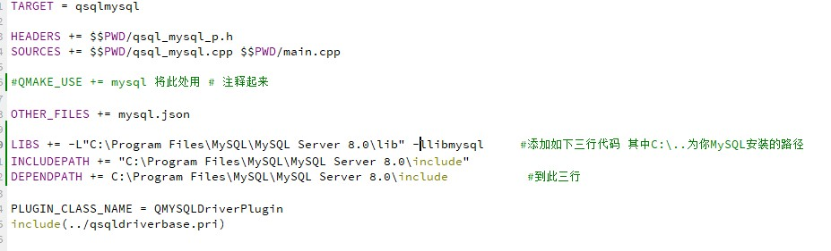

QT编译MYSQL驱动
前言
在使用QT进行C++开发时，会使用到MySQL，但高版本的QT并不支持MySQL（主要因为没有驱动，具体这里的爱恨情仇，博主也不太了解），所以想在QT中使用MySQL要自行手动的编译出MySQL驱动。
准备工作
在编译我们的MySQL驱动之前需要准备好如下的几项东西
1.QT
2.MySQL
3.QT源代码
QT
下载好安装器后需要选择自己的组件进行安装，这里必须要有的就是这个sources组件，当然了如果不确定自己是否安装过sources组件或者需要安装可以打开QT安装目录下的MaintenanceTool进行修改。至于编译套件的选择看个人喜好，但一定一定一定要注意的事情是编译套件的位数必须和MySQL的位数一致否则后续的编译会失败！！这里博主以编译套件MinGW 11.2.0 64-bit为例子。（PS：一定要记得自己把QT安在哪里了呀！！）
MySQL
MySQL只需要去官网下载最新版本即可戳这里进入MySQL下载界面
下载完成后第一个界面选择Custom
第二个界面中选择一个MySQL Server进行安装，官方为我们提供了8.0、5.7、5.6三个大版本可以选择
点开选择的MySQL Server后选择小版本，再次强调一定一定要选择和编译套件一样位数的MySQL安装。
QT源码
准备QT源码之前可以看一看自己QT安装目录下\QT\6.3.1\Src\qtbase\src\plugins\sqldrivers\mysql中是否存在mysql.pro文件，如果没有需要自行下载qt-everywhere-src-6.0.3文件戳这里进入源码下载界面
编译驱动及配置
修改项目文件
解压下载好的QT源码按照\QT\6.0.3\Src\qtbase\src\plugins\sqldrivers\mysql找到mysql.pro文件打开，使用和MySQL相同位数的编译套件进行编译，如果你正确的打开文件后那么项目栏应该是这样子滴。
打开mysql.pro文件进行如下修改

1 | LIBS += -L"C:\Program Files\MySQL\MySQL Server 8.0\lib" -llibmysql |
这里有一个坑是如果MySQL安装路径中有空格那么LIBS和INCLUDEPATH后的路径一定要用“”（双引号）引起再打开qsqldriverbase.pri文件进行如下修改
之后点击左下脚的构建（小榔头图标）
配置驱动
你编译好的驱动躺在你安装QT的盘符下的plugins文件夹中，比如博主的QT安装在了D盘，那么只要进入D盘就可以清楚地看见plugins文件夹，在.\plugins\sqldrivers中找到这三个小家伙，他们就是我们历经千辛万苦所编译出来的宝贵驱动文件。
将他们复制粘贴到（你的QT安装的位置）\QT\6.3.1\Src\qtbase\src\plugins\sqldrivers中
做到这里恭喜你你已经完成了80%的工作了！！
打开找到下面两个文件。
把他们放到你QT安装路径下\QT\6.3.1\mingw_64\bin中
新建一个QT项目，在第二步的时候将CMake改为qmake。高版本的QT逐渐抛弃了qmake，之后也会考虑出一片文章介绍一下这个事情，不过这里我们还是先用qmake。创建完成后要运行一次程序点击左下角的三角符号运行。
建好以后会出现两个文件夹。
接着打开你的MySQL安装路径找到Connector C++ 8.0文件夹打开其中的lib64文件夹找到这两个文件。
放在.\build-demo-Desktop_Qt_6_3_1_MinGW_64_bit-Debug\debug中
这一步操作的原因是因为MySql 8.0 之后的版本，提高了客户端和服务器数据通信的安全性，对通信数据做了加密，我们需要添加这两个文件（动态库），这里博主发现了一个现象等你再一次新建一个项目时不添加也可以成功运行一个MySQL程序，可能这就是爱的信任的力量。
测试阶段
OK！至此所有编译与配置都已经完成了接下来进行一个简单的测试
首先打开项目的pro文件在第一行代码最后添加“sql”
测试代码（全选复制粘贴到mainwindow.cpp，记得修改数据库的密码和数据库的名字）：
1 |
|
至此QT可以使用MYSQL
 wechat
wechat alipay
alipay